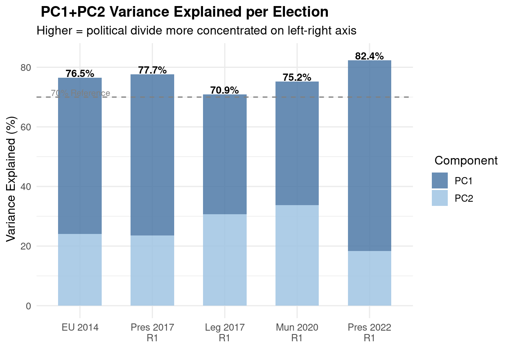
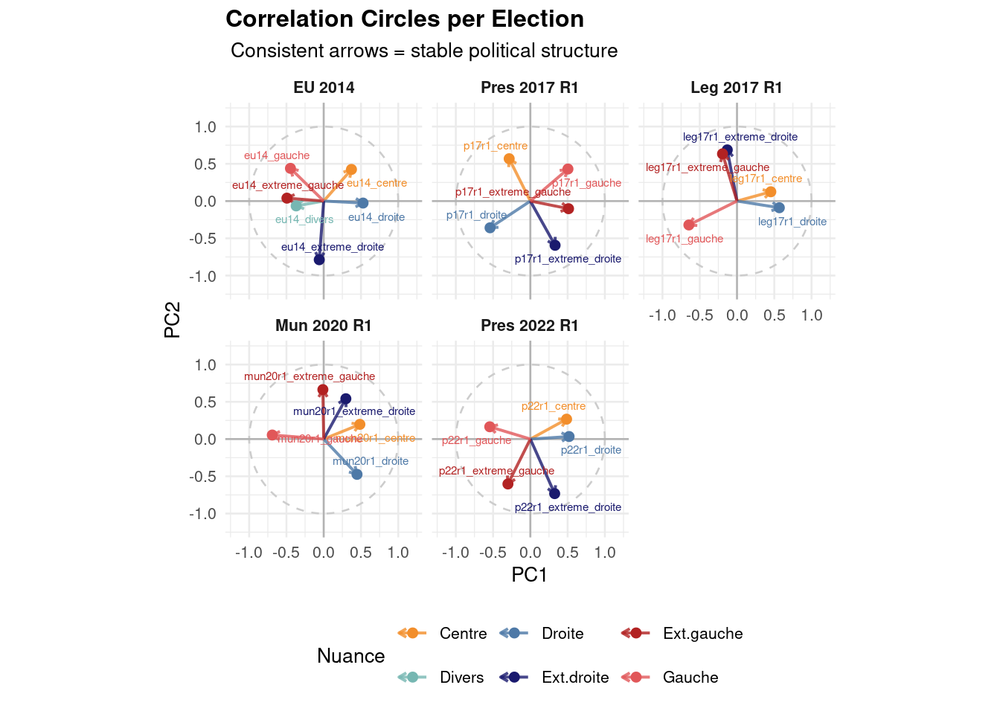

library(stringi)
library(dplyr)
载入程辑包：'dplyr'The following objects are masked from 'package:stats':
filter, lagThe following objects are masked from 'package:base':
intersect, setdiff, setequal, unionlibrary(stringr)
library(arrow)
载入程辑包：'arrow'The following object is masked from 'package:utils':
timestamplibrary(tidyr)
library(ggplot2)
library(ggrepel) # avoid overlapping labels
library(corrplot) corrplot 0.95 loadedlibrary(tibble)
# ===================
#list of datasets and download
# from hub.huwise.com (new name of opendatasoft)
# ===================
if (!dir.exists("data_raw")) dir.create("data_raw")
download_if_not_local <- function(url, dest) {
dest_path <- file.path("data_raw", dest)
if (!file.exists(dest_path)) {
message("Downloading ", dest)
download.file(url, dest_path, mode = "wb")
} else {
message(dest, " already exists, skipping.")
}
}
files <- list(
# Parlement européen, 2014
list(
url = "https://hub.huwise.com/api/explore/v2.1/catalog/datasets/resultats-des-elections-europeennes-2014/exports/parquet/?lang=en&offset=0&where=nom_de_la_commune%3D%22Lyon%22",
dest = "lyon_europe2014.parquet"
),
# Présidentielles, 2017, 1st round
list(
url = "https://hub.huwise.com/api/explore/v2.1/catalog/datasets/election-presidentielle-2017-resultats-par-bureaux-de-vote-tour-1/exports/parquet/?lang=en&offset=0&where=libelle_de_la_commune%3D%22Lyon%22",
dest = "lyon_pres2017_r1.parquet"
),
# Présidentielles, 2017, 2nd round
list(
url = "https://hub.huwise.com/api/explore/v2.1/catalog/datasets/election-presidentielle-2017-resultats-par-bureaux-de-vote-tour-2/exports/parquet/?lang=en&offset=0&where=libelle_de_la_commune%3D%22Lyon%22",
dest = "lyon_pres2017_r2.parquet"
),
# Législatives, 2017, 1st
list(
url = "https://hub.huwise.com/api/explore/v2.1/catalog/datasets/elections-legislatives-2017-resultats-par-bureaux-de-vote-tour-1/exports/parquet/?lang=en&offset=0&where=libelle_de_la_commune%3D%22Lyon%22",
dest = "lyon_leg2017_r1.parquet"
),
# Législatives, 2017, 2nd
list(
url = "https://hub.huwise.com/api/explore/v2.1/catalog/datasets/elections-legislatives-2017-resultats-par-bureaux-de-vote-tour-2/exports/parquet/?lang=en&offset=0&where=libelle_de_la_commune%3D%22Lyon%22",
dest = "lyon_leg2017_r2.parquet"
),
# Municipales, 2020, 1st
list(
url = "https://hub.huwise.com/api/explore/v2.1/catalog/datasets/election-france-municipale-2020-premier-tour/exports/parquet/?lang=en&offset=0&where=com_name%3D%22Lyon%22",
dest = "lyon_mun2020_r1.parquet"
),
# Municipales, 2020, 2nd
list(
url = "https://hub.huwise.com/api/explore/v2.1/catalog/datasets/election-france-municipale-2020-deuxieme-tour/exports/parquet/?lang=en&offset=0&where=com_name%3D%22Lyon%22",
dest = "lyon_mun2020_r2.parquet"
),
# Présidentielles, 2022, 1st
list(
url = "https://hub.huwise.com/api/explore/v2.1/catalog/datasets/elections-france-presidentielles-2022-1er-tour-par-bureau-de-vote/exports/parquet/?lang=en&offset=0&where=com_name%3D%22Lyon%22",
dest = "lyon_pres2022_r1.parquet"
),
# Présidentielles, 2022, 2nd
list(
url = "https://hub.huwise.com/api/explore/v2.1/catalog/datasets/elections-france-presidentielles-2022-2nd-tour-par-bureau-de-vote/exports/parquet/?lang=en&offset=0&where=com_name%3D%22Lyon%22",
dest = "lyon_pres2022_r2.parquet"
)
)
# download
for (f in files) {
download_if_not_local(f$url, f$dest)
}lyon_europe2014.parquet already exists, skipping.lyon_pres2017_r1.parquet already exists, skipping.lyon_pres2017_r2.parquet already exists, skipping.lyon_leg2017_r1.parquet already exists, skipping.lyon_leg2017_r2.parquet already exists, skipping.lyon_mun2020_r1.parquet already exists, skipping.lyon_mun2020_r2.parquet already exists, skipping.lyon_pres2022_r1.parquet already exists, skipping.lyon_pres2022_r2.parquet already exists, skipping.message("All files have been downloaded.")All files have been downloaded.# ===================
# data loading
# ===================
europe2014 = arrow::read_parquet("data_raw/lyon_europe2014.parquet")
pres2017_r1 = arrow::read_parquet("data_raw/lyon_pres2017_r1.parquet")
pres2017_r2 = arrow::read_parquet("data_raw/lyon_pres2017_r2.parquet")
leg2017_r1 = arrow::read_parquet("data_raw/lyon_leg2017_r1.parquet")
leg2017_r2 = arrow::read_parquet("data_raw/lyon_leg2017_r2.parquet")
mun2020_r1 = arrow::read_parquet("data_raw/lyon_mun2020_r1.parquet")
mun2020_r2 = arrow::read_parquet("data_raw/lyon_mun2020_r2.parquet")
pres2022_r1 = arrow::read_parquet("data_raw/lyon_pres2022_r1.parquet")
pres2022_r2 = arrow::read_parquet("data_raw/lyon_pres2022_r2.parquet")
# ===================
# clean_data
# ===================
# Parlement européen, 2014
# https://fr.wikipedia.org/wiki/%C3%89lections_europ%C3%A9ennes_de_2014_en_France#Sud-Est_2
partis = europe2014 |> dplyr::group_by(code_nuance_du_candidat) |> dplyr::summarise(votes=sum(nombre_de_voix_du_candidat))
partis# A tibble: 10 × 2
code_nuance_du_candidat votes
<chr> <int>
1 LDIV 4309
2 LDVD 8021
3 LDVG 5515
4 LEXG 918
5 LFG 7299
6 LFN 17016
7 LUC 14890
8 LUG 21731
9 LUMP 28777
10 LVEC 16635candidats = europe2014 |> dplyr::group_by(candidat, code_nuance_du_candidat) |> dplyr::summarise(votes=sum(nombre_de_voix_du_candidat)) |> dplyr::arrange(desc(votes))`summarise()` has regrouped the output.
ℹ Summaries were computed grouped by candidat and code_nuance_du_candidat.
ℹ Output is grouped by candidat.
ℹ Use `summarise(.groups = "drop_last")` to silence this message.
ℹ Use `summarise(.by = c(candidat, code_nuance_du_candidat))` for per-operation
grouping (`?dplyr::dplyr_by`) instead.candidats# A tibble: 23 × 3
# Groups: candidat [23]
candidat code_nuance_du_candidat votes
<chr> <chr> <int>
1 Renaud MUSELIER LUMP 28777
2 Vincent PEILLON LUG 21731
3 Jean-Marie LE PEN LFN 17016
4 Michèle RIVASI LVEC 16635
5 Sylvie GOULARD LUC 14890
6 Marie-Christine VERGIAT LFG 7299
7 Jean-Baptiste COUTELIS LDVG 5515
8 Gerbert RAMBAUD LDVD 3620
9 Bertrand LESCURE LDVD 3584
10 Valérie MIRA LDIV 2296
# ℹ 13 more rowsreplace_nuance <- function(df, nuances_mapping) {
for (nuance_i in seq_along(nuances_mapping)) {
for (liste_noms in nuances_mapping[nuance_i]) {
for (nom in liste_noms) {
df[df==nom] <- names(nuances_mapping)[nuance_i]
}
}
}
df
}
nuances_mapping <- list(
extreme_gauche = list("LEXG", "LFG"),
gauche = list("LDVG", "LUG", "LVEC"),
centre = list("LUC"),
droite = list("LDVD", "LUMP"),
extreme_droite = list("LFN"),
divers = list("LDIV")
)
europe2014_clean <- europe2014 |> dplyr::select(no_de_bureau_de_vote, code_nuance_du_candidat, nombre_de_voix_du_candidat) |> dplyr::mutate(bureau=no_de_bureau_de_vote, nuance=code_nuance_du_candidat, votes=nombre_de_voix_du_candidat) |> dplyr::select(bureau, nuance, votes)
europe2014_clean <- replace_nuance(europe2014_clean, nuances_mapping)
#Présidentielles 2017
pres2017_r1 |> dplyr::select(nom, voix) |> dplyr::mutate(nom=tolower(nom)) |> dplyr::mutate(nom=stringi::stri_trans_general(nom, id="Latin-ASCII")) |> dplyr::group_by(nom) |> dplyr::summarize(votes=sum(voix))# A tibble: 11 × 2
nom votes
<chr> <int>
1 arthaud 838
2 asselineau 2138
3 cheminade 400
4 dupont-aignan 6199
5 fillon 54889
6 hamon 21383
7 lassalle 1423
8 le pen 20766
9 macron 71068
10 melenchon 53563
11 poutou 1840#https://fr.wikipedia.org/wiki/%C3%89lection_pr%C3%A9sidentielle_fran%C3%A7aise_de_2017#Candidats
nuances_mapping <- list(
extreme_gauche = list("arthaud", "poutou"),
gauche = list("hamon", "melenchon"),
centre = list("lassalle", "macron"),
droite = list("asselineau", "dupont-aignan", "fillon"),
extreme_droite = list("le pen", "cheminade")
)
#Présidentielles 2017 round 1
pres2017_r1_clean <- pres2017_r1 |> dplyr::mutate(nuance=tolower(nom)) |> dplyr::select(code_du_b_vote, nuance, voix) |> dplyr::mutate(nuance=stringi::stri_trans_general(nuance, id="Latin-ASCII")) |> replace_nuance(nuances_mapping) |> dplyr::select(bureau = code_du_b_vote, nuance, votes = voix)
#Présidentielles 2017 round 2
pres2017_r2_clean <- pres2017_r2 |> dplyr::mutate(nuance=tolower(nom)) |> dplyr::select(code_du_b_vote, nuance, voix) |> dplyr::mutate(nuance=stringi::stri_trans_general(nuance, id="Latin-ASCII")) |> replace_nuance(nuances_mapping) |> dplyr::select(bureau = code_du_b_vote, nuance, votes = voix)
#Législatives 2017
#round1
leg2017_r1 |> dplyr::select(nuance, voix) |> dplyr::mutate(nuance) |> dplyr::group_by(nuance) |> dplyr::summarize(votes=sum(voix))# A tibble: 14 × 2
nuance votes
<chr> <int>
1 COM 2465
2 DIV 5252
3 DLF 1539
4 DVD 2001
5 DVG 7570
6 ECO 12859
7 EXD 303
8 EXG 834
9 FI 20287
10 FN 9111
11 LR 22438
12 REG 0
13 REM 68799
14 UDI 4427nuances_mapping <- list(
extreme_gauche = list("COM", "EXG"),
gauche = list("FI", "DVG", "ECO"),
centre = list("DIV", "REG", "REM", "UDI"),
droite = list("DLF", "DVD", "LR"),
extreme_droite = list("EXD", "FN")
)
leg2017_r1_clean <- leg2017_r1 |> dplyr::select(code_du_b_vote, nuance, voix) |> dplyr::mutate(bureau=code_du_b_vote, votes=voix) |> replace_nuance(nuances_mapping)|> dplyr::select(bureau, nuance, votes)
#round2
leg2017_r2_clean <- leg2017_r2 |> dplyr::select(code_du_b_vote, nuance, voix) |> dplyr::mutate(bureau=code_du_b_vote, votes=voix) |> replace_nuance(nuances_mapping) |> dplyr::select(bureau, nuance, votes)
#municipales 2020
mun2020_r1 |> dplyr::group_by(list) |> dplyr::summarise(votes=sum(vote)) # A tibble: 35 × 2
list votes
<chr> <int>
1 Bleu Blanc Lyon Etienne Blanc, Union de la droite, des Républicains et… 7073
2 Bleu Blanc Lyon Étienne Blanc, Union de la droite, Des Républicains et… 1646
3 Bleu Blanc Lyon Étienne Blanc, Union de la droite, des Républicains et… 9277
4 DROIT DE CITÉ 75
5 LUTTE OUVRIERE - Faire entendre le camp des travailleurs 112
6 LYON 100% SOCIAL 65
7 LYON EN COMMUN 5880
8 LYON en COMMUN 461
9 Lutte Ouvrière - Faire entendre le camp des Travailleurs 192
10 Lutte Ouvrière - Faire entendre le camp des travailleurs 77
# ℹ 25 more rows# Function to cleanup party names (lowercase, no accents, and cut to 20 characters)
get_votes_by_cleaned_list <- function(df)
{
df |> dplyr::mutate(liste=tolower(list)) |> dplyr::mutate(liste=stringr::str_trunc(liste, 20)) |> dplyr::mutate(liste=stringi::stri_trans_general(liste, id="Latin-ASCII")) |> dplyr::group_by(liste) |> dplyr::summarise(votes=sum(vote))
}
listes_mun2020_r1 = get_votes_by_cleaned_list(mun2020_r1)
listes_mun2020_r1# A tibble: 13 × 2
liste votes
<chr> <int>
1 bleu blanc lyon e... 17996
2 droit de cite 75
3 lutte ouvriere - ... 762
4 lyon 100% social 65
5 lyon en commun 10639
6 maintenant lyon p... 30102
7 positivons lyon a... 4088
8 positivons lyon-1... 304
9 pour l'amour de lyon 5735
10 respirations avec... 12672
11 un temps d'avance... 15786
12 vivons vraiment l... 7412
13 vos idees en lumiere 137listes_mun2020_r2 = get_votes_by_cleaned_list(mun2020_r2)
listes_mun2020_r2# A tibble: 6 × 2
liste votes
<chr> <int>
1 bleu blanc lyon e... 1855
2 ensemble, l'ecolo... 48852
3 lyon, la force du... 26203
4 maintenant lyon p... 4218
5 respirations avec... 17240
6 un temps d'avance... 2907nuances_mapping <- list(
extreme_gauche = list("lutte ouvriere - ...", "EXG"),
gauche = list("droit de cite", "lyon 100% social", "lyon en commun", "maintenant lyon p...", "vivons vraiment l...", "ensemble, l'ecolo..."),
centre = list("positivons lyon a...", "positivons lyon-1...", "respirations avec...", "un temps d'avance..."),
droite = list("bleu blanc lyon e...", "vos idees en lumiere", "lyon, la force du..."),
extreme_droite = list("pour l'amour de lyon")
)
# two round data of Municipales 2020
mun2020_clean_r1 = mun2020_r1 |> dplyr::mutate(nuance=tolower(list)) |> dplyr::mutate(nuance=stringr::str_trunc(nuance, 20)) |> dplyr::mutate(nuance=stringi::stri_trans_general(nuance, id="Latin-ASCII")) |> dplyr::select(office, nuance, vote) |> dplyr::mutate(bureau=office, nuance=nuance, votes=vote) |> replace_nuance(nuances_mapping) |> dplyr::select(bureau = office, nuance, votes = vote)
mun2020_clean_r2 = mun2020_r2 |> dplyr::mutate(nuance=tolower(list)) |> dplyr::mutate(nuance=stringr::str_trunc(nuance, 20)) |> dplyr::mutate(nuance=stringi::stri_trans_general(nuance, id="Latin-ASCII")) |> dplyr::select(office, nuance, vote) |> dplyr::mutate(bureau=office, nuance=nuance, votes=vote) |> replace_nuance(nuances_mapping)|> dplyr::select(bureau = office, nuance, votes = vote)
# https://fr.wikipedia.org/wiki/%C3%89lections_municipales_de_2020_%C3%A0_Lyon#R%C3%A9sultats_g%C3%A9n%C3%A9raux)
#Présidentielles 2022
pres2022_r1 |> dplyr::group_by(nom) |> dplyr::summarise(votes=sum(voix))# A tibble: 12 × 2
nom votes
<chr> <int>
1 ARTHAUD 828
2 DUPONT-AIGNAN 2785
3 HIDALGO 4798
4 JADOT 18107
5 LASSALLE 3415
6 LE PEN 21248
7 MACRON 75199
8 MÉLENCHON 73367
9 POUTOU 1412
10 PÉCRESSE 13166
11 ROUSSEL 3841
12 ZEMMOUR 18062nuances_mapping <- list(
extreme_gauche = list("ARTHAUD", "POUTOU", "ROUSSEL"),
gauche = list("MÉLENCHON", "JADOT", "HIDALGO"),
centre = list("LASSALLE", "MACRON"),
droite = list("DUPONT-AIGNAN", "PÉCRESSE"),
extreme_droite = list("LE PEN", "ZEMMOUR")
)
pres2022_r1_clean <- pres2022_r1 |> dplyr::select(code_du_b_vote, nom, voix) |> dplyr::mutate(bureau=code_du_b_vote, nuance=nom, votes=voix) |> replace_nuance(nuances_mapping)|> dplyr::select(bureau = code_du_b_vote, nuance, votes = voix)
pres2022_r2_clean <- pres2022_r2 |> dplyr::select(code_du_b_vote, nom, voix) |> dplyr::mutate(bureau=code_du_b_vote, nuance=nom, votes=voix) |> replace_nuance(nuances_mapping)|> dplyr::select(bureau = code_du_b_vote, nuance, votes = voix)
#LR <- list("bleu blanc lyon e...")
#DVG <- list ("droit de cite", "lyon 100% social")
#LO <- list ("lutte ouvriere - ...")
#LFI <- list ("lyon en commun")
#EELV <- list ("maintenant lyon p...")
#LC <- list ("positivons lyon a...", "positivons lyon-1...")
#RN <- list ("pour l'amour de lyon")
#LREM <- list ("respirations avec...", "un temps d'avance...")
#PS <- list ("vivons vraiment l...")
#UPR <- list ("vos idees en lumiere")
#-------------------------------
# Helper function: long table into wide table (proportions)
#
make_wide <- function(df, label) {
df |>
dplyr::group_by(bureau, nuance) |>
dplyr::summarise(votes = sum(votes, na.rm = TRUE), .groups = "drop") |>
dplyr::group_by(bureau) |>
dplyr::mutate(pct = votes / sum(votes)) |>
dplyr::ungroup() |>
dplyr::select(bureau, nuance, pct) |>
tidyr::pivot_wider(names_from = nuance, values_from = pct, values_fill = 0) |>
dplyr::rename_with(~ paste0(label, "_", .), -bureau)
}
# Generate wide tables
w_eu14 <- make_wide(europe2014_clean, "eu14")
w_p17r1 <- make_wide(pres2017_r1_clean, "p17r1")
w_p17r2 <- make_wide(pres2017_r2_clean, "p17r2")
w_leg17r1 <- make_wide(leg2017_r1_clean, "leg17r1")
w_leg17r2 <- make_wide(leg2017_r2_clean, "leg17r2")
w_mun20r1 <- make_wide(mun2020_clean_r1, "mun20r1")
w_mun20r2 <- make_wide(mun2020_clean_r2, "mun20r2")
w_p22r1 <- make_wide(pres2022_r1_clean, "p22r1")
w_p22r2 <- make_wide(pres2022_r2_clean, "p22r2")
# Merge all elections
all_elections <- w_eu14 |>
inner_join(w_p17r1, by = "bureau") |>
inner_join(w_p17r2, by = "bureau") |>
inner_join(w_leg17r1, by = "bureau") |>
inner_join(w_leg17r2, by = "bureau") |>
inner_join(w_mun20r1, by = "bureau") |>
inner_join(w_mun20r2, by = "bureau") |>
inner_join(w_p22r1, by = "bureau") |>
inner_join(w_p22r2, by = "bureau")
# Remove NA
all_elections_clean <- na.omit(all_elections)
# Check
cat(" Polling stations:", nrow(all_elections_clean), "\n") Polling stations: 0 cat(" Variables:", ncol(all_elections_clean) - 1, "\n") Variables: 36 # Helper: run PCA on one wide table and return summary
run_pca <- function(wide_df, label) {
# Remove bureau column, keep numeric only
X <- wide_df |> dplyr::select(-bureau) |> as.matrix()
# Run PCA
pca <- prcomp(X, center = TRUE, scale. = TRUE)
# Extract variance explained
imp <- summary(pca)$importance
pc1_pct <- round(imp[2, 1] * 100, 1)
pc2_pct <- round(imp[2, 2] * 100, 1)
list(pca = pca, label = label, pc1 = pc1_pct, pc2 = pc2_pct,
bureaux = wide_df$bureau)
}
# Run individual PCA on each first-round election
# Use round 1: most candidates, richest information
cat(" Individual PCA per election:\n") Individual PCA per election:cat(strrep("-", 55), "\n")------------------------------------------------------- pca_eu14 <- run_pca(w_eu14, "欧洲议会2014 / EU Parliament 2014")
pca_p17r1 <- run_pca(w_p17r1, "总统2017第1轮 / Presidential 2017 R1")
pca_leg17r1 <- run_pca(w_leg17r1, "立法2017第1轮 / Legislative 2017 R1")
pca_mun20r1 <- run_pca(w_mun20r1, "市政2020第1轮 / Municipal 2020 R1")
pca_p22r1 <- run_pca(w_p22r1, "总统2022第1轮 / Presidential 2022 R1")
# Plot 1: Compare PC1 variance explained across elections
# This answers: which election had the most political polarization?
variance_compare <- data.frame(
election = c("EU 2014", "Pres 2017\nR1", "Leg 2017\nR1",
"Mun 2020\nR1", "Pres 2022\nR1"),
pc1 = c(pca_eu14$pc1, pca_p17r1$pc1, pca_leg17r1$pc1,
pca_mun20r1$pc1, pca_p22r1$pc1),
pc2 = c(pca_eu14$pc2, pca_p17r1$pc2, pca_leg17r1$pc2,
pca_mun20r1$pc2, pca_p22r1$pc2)
) |>
mutate(total = pc1 + pc2,
election = factor(election, levels = election))
# Convert to long format for stacked bars
variance_long <- variance_compare |>
pivot_longer(cols = c(pc1, pc2),
names_to = "component",
values_to = "variance") |>
mutate(component = ifelse(component == "pc1", "PC1", "PC2"))
ggplot(variance_long, aes(x = election, y = variance, fill = component)) +
geom_col(alpha = 0.85, width = 0.6) +
geom_text(
data = variance_compare,
aes(x = election, y = total + 1.5,
label = paste0(total, "%")),
inherit.aes = FALSE, size = 3.5, fontface = "bold"
) +
scale_fill_manual(values = c("PC1" = "#4E79A7", "PC2" = "#A0C4E2"),
name = " Component") +
geom_hline(yintercept = 70, linetype = "dashed", color = "grey50") +
annotate("text", x = 0.6, y = 71.5,
label = "70% Reference", size = 3, color = "grey50", hjust = 0) +
labs(
title = " PC1+PC2 Variance Explained per Election",
subtitle = "Higher = political divide more concentrated on left-right axis",
x = "", y = " Variance Explained (%)"
) +
theme_minimal(base_size = 12) +
theme(plot.title = element_text(face = "bold"))
# Plot 2: Correlation circles for all elections (2×3 grid)
# Check if variable directions are consistent across elections
make_circle_data <- function(pca_result, label) {
as.data.frame(pca_result$pca$rotation[, 1:2]) |>
rownames_to_column("variable") |>
mutate(
election = label,
length = sqrt(PC1^2 + PC2^2),
nuance = case_when(
str_detect(variable, "extreme_gauche") ~ "Ext.gauche",
str_detect(variable, "gauche") ~ "Gauche",
str_detect(variable, "centre") ~ "Centre",
str_detect(variable, "droite") & !str_detect(variable, "extreme") ~ "Droite",
str_detect(variable, "extreme_droite") ~ "Ext.droite",
TRUE ~ "Divers"
)
)
}
all_circles <- bind_rows(
make_circle_data(pca_eu14, "EU 2014"),
make_circle_data(pca_p17r1, "Pres 2017 R1"),
make_circle_data(pca_leg17r1, "Leg 2017 R1"),
make_circle_data(pca_mun20r1, "Mun 2020 R1"),
make_circle_data(pca_p22r1, "Pres 2022 R1")
) |>
mutate(election = factor(election,
levels = c("EU 2014", "Pres 2017 R1", "Leg 2017 R1",
"Mun 2020 R1", "Pres 2022 R1")))
color_palette <- c(
"Ext.gauche" = "#B22222",
"Gauche" = "#E15759",
"Centre" = "#F28E2B",
"Droite" = "#4E79A7",
"Ext.droite" = "#1a1a6e",
"Divers" = "#76B7B2"
)
ggplot(all_circles, aes(x = PC1, y = PC2, color = nuance)) +
# Unit circle
annotate("path",
x = cos(seq(0, 2*pi, length.out = 100)),
y = sin(seq(0, 2*pi, length.out = 100)),
color = "grey80", linetype = "dashed") +
geom_hline(yintercept = 0, color = "grey70") +
geom_vline(xintercept = 0, color = "grey70") +
geom_segment(aes(xend = 0, yend = 0),
arrow = arrow(length = unit(0.15, "cm"), ends = "first"),
linewidth = 0.7, alpha = 0.8) +
geom_point(size = 2) +
geom_text_repel(aes(label = variable), size = 2,
max.overlaps = 20, show.legend = FALSE) +
scale_color_manual(values = color_palette, name = "Nuance") +
coord_equal(xlim = c(-1.2, 1.2), ylim = c(-1.2, 1.2)) +
# One panel per election
facet_wrap(~ election, ncol = 3) +
labs(
title = "Correlation Circles per Election",
subtitle = " Consistent arrows = stable political structure",
x = "PC1", y = "PC2"
) +
theme_minimal(base_size = 10) +
theme(plot.title = element_text(face = "bold"),
legend.position = "bottom",
strip.text = element_text(face = "bold"))
ggsave("plot2_circles_comparison.png", width = 20, height = 13, dpi = 150)